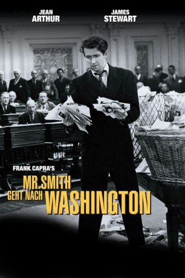

#11391 Mr. Smith geht nach Washington
Alternativ: Mr. Smith Goes to Washington (Englischer Titel)
Auszeichnungen: 1 Oscars gewonnen für 10 Oscars nominiert
 
 IMDB-Wertung: 8.2 / 10
IMDB-Wertung: 8.2 / 10  IMDB-TOP-Platzierung: 153
IMDB-TOP-Platzierung: 153  Metascore: 73
Metascore: 73 
Politisches Drama mit Jean Arthur und James Stewart in den Hauptrollen. Ein idealistischer Kleinstadtsenator begibt sich auf den Weg nach Washington, wo er gegen skrupellose Politiker antreten muss.
Jahr: 1939
Dauer: 129 Minuten
FSK: 0
Land: USA Studio: ColumbiaTonspuren:
Untertitel: Deutsch,
Auflösung: 1080p (1488x1080) Größe: 10076 MB
Genre: Drama, Komödie
Regisseur:  Frank Capra
Frank Capra
Drehbuch: Sidney Buchman, Lewis R. Foster, Myles Connolly
Soundtrack: Dimitri Tiomkin
Darsteller:
- Jean Arthur als Saunders
 James Stewart als Jefferson Smith
James Stewart als Jefferson Smith Claude Rains als Senator Joseph Paine
Claude Rains als Senator Joseph Paine- Edward Arnold als Jim Taylor
- Guy Kibbee als Governor Hopper
- Thomas Mitchell als Diz Moore
- Eugene Pallette als Chick McGann
- Beulah Bondi als Ma Smith
- Harry Carey als President of the Senate
- Astrid Allwyn als Susan Paine
- Ruth Donnelly als Mrs. Hopper
 Charles Lane als Nosey
Charles Lane als Nosey Pierre Watkin als Senate Minority Leader
Pierre Watkin als Senate Minority Leader- William Demarest als Bill Griffith
- Jack Carson als Sweeney Farrell - Newsman (uncredited)
 Dickie Jones als Pageboy Richard Jones (uncredited)
Dickie Jones als Pageboy Richard Jones (uncredited)- Paul Stanton als Flood - Newsman (uncredited)
 H.B. Warner als
H.B. Warner als - Grant Mitchell als
 Porter Hall als
Porter Hall als  Dick Elliott als
Dick Elliott als - Delmar Watson als
- Larry Simms als
- Erville Alderson als
 Stanley Andrews als
Stanley Andrews als  Sam Ash als
Sam Ash als - Edwin August als
- Frank Austin als
- Brooks Benedict als
 Edward Biby als
Edward Biby als - Wade Boteler als
- Harry C. Bradley als
- Lynton Brent als
 Al Bridge als
Al Bridge als - Harlan Briggs als
- Edward Brophy als
- Tommy Bupp als
- Harry Burkhardt als
- Frederick Burton als
- Georgia Caine als
 George Chandler als
George Chandler als - Dora Clement als
- Edmund Cobb als
- Dorothy Comingore als
- Chester Conklin als
- George Cooper als
- Anne Cornwall als
 Gino Corrado als
Gino Corrado als - Maurice Costello als
- Alec Craig als
Datei: X:\1900-1949\Mr. Smith geht nach Washington (1939, FSK0, 1488x1080).mkv seit 26.06.2019
Festplatte: Gemischt-01+Anime
 Es gibt insgesamt 80 Filme in der Gruppe '1900-1949'
Es gibt insgesamt 80 Filme in der Gruppe '1900-1949'